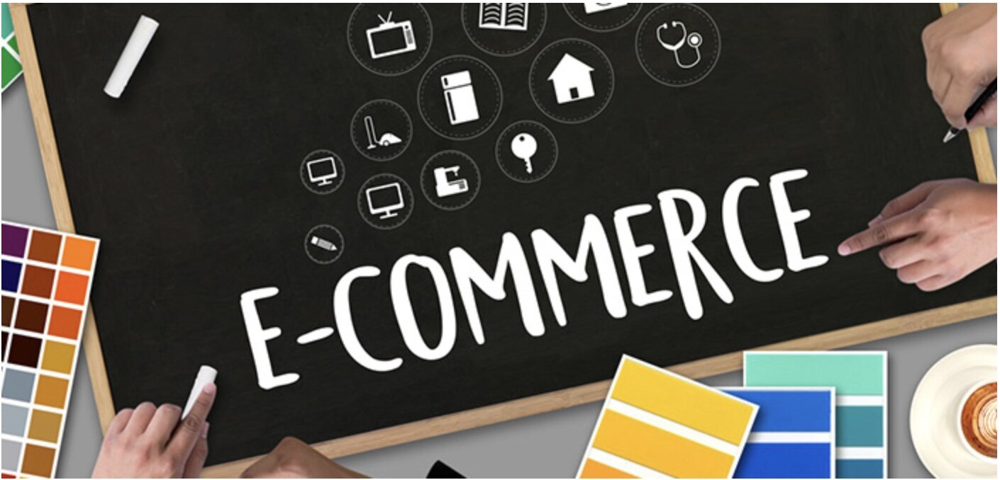

About Project
+ Tools and technologies: Firstly, Web server will be used to host the e-commerce website including HTML, JavaScript,... that make up the entire website are stored on this server and it can run on Windows or Linux. Secondly, about the server software, i will choose the application software like Apache or Window IIS. Furthermore, for the networking, I will use SSL (Secure Sockets Layer) and TLS (Transport Layer Security) to keep an internet connection secure and safeguarding any sensitive data that is being sent between two systems. Moreover, there are many web browsers including Google Chrome, Safari or Mozilla Firefox that is used to display and receive content from the web server. In addition, Port 25 (SMTP) is usually reserved for email. It is used to transmit data from remote email servers. Finally, Domain names link to the company or brand, it is important to protect the brand by doing multiple registrations of domain names such as .com, .net, .uk, .org, .co
+ To be specific, in order to implement this project, there are lots of skills required for it. For example, programming skills, graphic design skills and analyzing skills. Due to the fact that we will use C++, Python Programming, furthermore, I will use HTML , JavaScript or CSS for Front-end and HTML Text Editor (Notepad ++), then I will use MySQL Database. For networking, I will choose HTTPS but also provide SSL and TLS. Port 80 for HTTP and port 22 for SSH needs to be opened so that ecommerce website can function properly. These skills and software are possible to find and use it wisely and efficiently.
+ If the project is successful, it will be a major change in Vietnamese market, it will help increase profits and job opportunities. The project “FastGoods” will solve the shopping problem to anyone who do not have much time to go to the supermarket but still want to make a meal for their family. Furthermore, this project is an ideal place for sellers and buyers to negotiate prices before the trade finishes. Finally, this is just a demo of my project, I’d like to add more features if the first step of this project successful.